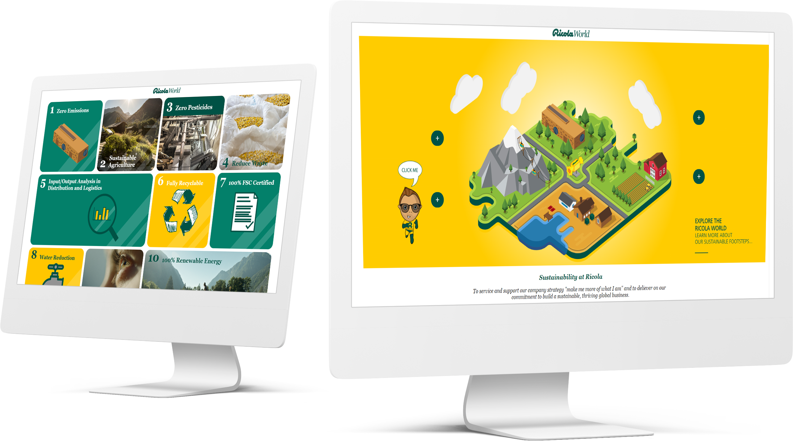

Ricola Case Study
How might we anchor sustainability internally in Ricola?
Responsibilites
I worked as a product owner in an agile team.As a UX designer I was responsible for user research, creating & testing prototypes in Figma, and setting up UI design styles for the final product together with the front-end developers.
About Ricola
90 year old Swiss family owned company rooted in Naturally healthy Swiss alpine herbs. Ricola´s core business is currently a hard boiled herbal drop, that soothes your throat and tastes really well.
Problem Statement
It was a HyperIsland X-cross program student project.Our client came to HyperIsland to get help for communicating and anchoring sustainability internally.Ricola also wanted to become a role model in the world for all sustainability work they do.
Solution
Interactive digital brochure can be deployed as part of website which is designed for all kinds of target audiences.Check out here
Time Frame
1 month
Tools Used
- Miro
- Figma
- Maze
- Adobe illustrator
- Adobe Photoshop
- Adobe Premiere Pro
Process
Point of departure
Being responsible as Product owner I facilitated the workshop for team building with the FED team to align on goals of the project and to understand each other’s needs to work as a team.I was involved in setting up basic framework to work together.

Scrum Methodology
In this project I have been introduced to scrum methodology by front end development team.So basically we created one scrum board every week and we had one scrum master to facilitate the same.It includes daily stadups meetings and workshops ,which really helped me to understand how our design gets translated by developers in code,also things to prioritize,and to get bigger picture of our product vision and expected outcome.Lastly it really made our communication fluid and transparent.
UX Process
Every UX process is different for the task at hand. So I am going to take you through the process and methods I used in this project.For this project, we took the double diamond approach to discover and define the problem first.

User Research
In the discovery phase, we did qualitative research to understand the user´s behavior and asked questions to the client. Which in this case both are Ricola´s employees but share different opinions and interests.
I interviewed two employees of Ricola who were not part of the green team of Ricola. During the interview, I asked open questions about sustainability and its value to them. I asked, how they get to know about sustainability steps taken by their company and how they feel about it.
Based on the gathered insights we realized that other than the green team no one knows about what steps Ricola as the company takes to become sustainable and how they can associate with the green team to anchor sustainability internally in Ricola. We also learned that they believe in their vice-chairman Rasmus and his green team.
Ideation-Solutions Brainstorm
We did multiple brainstorming and ideation workshops to solve the problem at hand. For selecting one idea to move forward with, we used the tool ”How-Now-Wow Matrix” from the hyper island toolbox. We use this for selecting ideas based on feasibility.
And finally, we decided on having an interactive isometric image on the landing page representing Ricola, We believed that with the playful theme, people will find it attractive and engaging. We wanted people to learn about Ricola's sustainability efforts and wanted to make the content more engaging for the target audience.
Design Process
Towards the development phase, we discussed all our ideas and created lofi prototypes to test and reiterate.

1st Iteration
In our first iteration we tested our idea of having an interactive image on the landing page and navigating through that page to different categories of footsteps.
In our first iteration we tested our idea of having an interactive image on the landing page and navigating through that page to different categories of footsteps.We created digital wireframes so that it's easy to collaborate while working remotely.We chose to go for midfi design mainly because in this case we wanted to test whether or not users feel interested in reading information and what kind of information they are most likely to read.So at the home page we placed an interactive isometric image along with themed based text to guide people.From clicking any of those links on the isometric page user will be navigated to particular themed footsteps and their subcategory.After clicking on sub category user was able to read about the various footsteps taken by their company. We were able to create this design within a day.
Usability Testing
For testing we made a test plan to understand what we want to know from the test and defined what we assumed.From testing in maze we find out that some users like to interact with images and some people find it hard to understand where they are supposed to click even though we hand big font texts along with the interactive image,also after navigating through pages some users lose their interest in reading through the content as the interactive image was the main hold of their interest on the page.
2nd Iteration
With that feedback into consideration, I created the 2nd iteration of our prototype this time and made changes to the landing page interactive image.
- We took a more pedagogic design approach.
- Gave clear buttons and navigation so the user would know where to click. Gave them multiple options.
- Instead of navigating users to a different page for reading through all footsteps, we created clickable cards for each footstep under the specific category.
- We used a combination of images, graphs, and illustrations to display information.
- We also came up with the idea of having Avtar of Ricola Green team vice president Rasmus. Because we noticed that employees in Ricola admire Rasmus sustainability efforts and also when he gave his presentation to us about Ricola 28 footsteps we really felt connected,So if Rasmus himself talk to each every employee through this solution this will encourage them to read and anchor the sustainability internally.Even though we couldn´t really test this because of less number of testers.
User Testing
In usability testing again we got feedback from the user “He liked the design and we noticed that he spent some time reading through the information. He gave us feedback that he would like to see the final design. We also observed that our target audience was a mix of all kinds of people, some like to read through the information, some like to see the actual data in the form of graphs, and some like to see the interpretation of data.
Takeaways
-
Finding the right solutions for the users through an iterative design
Having an interactive isometric image with Text on the landing page in 1st iteration,our hypothesis was that the people could easily understand the navigation on the page that turned
-
Talking to the right target audience
At first we started by testing our prototype with random people who believes in sustainability but were not employees of Ricola.So when we tested our prototype with those people the content on the page was not making sense to them,but when we tested with Ricola employees ,results were totally different they found information useful and engaging.
-
Understanding the collaboration between UX and Front end developers
I got to experience the responsibility of Product owner .Used contentful.com to upload content for developers to use also got to learn about their process of designing & coding.
Deliverables
- Design Styles
- Prototypes
- UI assets